Google Workspace Studio là nền tảng no-code/low-code để nối các ứng dụng trong Google Workspace thành quy trình tự động, ví dụ Calendar, Chat, Docs, Drive và Sheets. Người dùng có thể thiết kế flow bằng giao diện kéo-thả thay vì viết script phức tạp, phù hợp cho team vận hành nghiệp vụ, PM/presales hoặc admin nội bộ.
Các chức năng chính được dùng trong bài gồm: Starter (kích hoạt theo sự kiện thời gian/meeting), Actions (ghi Doc, thêm dòng Sheet, gửi Chat), Template hóa tài liệu để chuẩn hóa đầu ra, AI Extract để trích thông tin từ biên bản, và Run history để theo dõi lần chạy và xử lý lỗi/idempotency.
Trên nền đó, bài viết triển khai routine Estimate + Proposal theo chuỗi meeting → minutes template → proposal draft → notify, với bối cảnh buổi phỏng vấn yêu cầu khách hàng 30 phút trong mô hình IT contracting. Nội dung thực hành bám theo 3 nguồn tham khảo chính: NI&DC, Zenn, Medium. Bài demo triển khai thực tế bằng Calendar, Chat, Docs và Sheets, có ảnh Step 1-20 và run logs.
Checklist mục tiêu trong bài: (1) Trigger từ Calendar để tạo/cập nhật minutes doc từ template; (2) gửi pre-meeting checklist lên Google Chat; (3) sau họp trích key points từ minutes để điền proposal doc; (4) append ít nhất 1 work item vào estimate sheet mà không nhập tay; (5) kiểm chứng tối thiểu 3 điểm dễ hỏng như quyền truy cập, đổi template ID, biến động tên event, chạy trùng; (6) tài liệu hóa cấu trúc template/folder và phần tham số để người khác có thể dựng lại.
Bối cảnh: công ty IT outsourcing nhận brief sơ từ khách bán lẻ, cần chuẩn hóa phút họp 30 phút, đề xuất phạm vi kỹ thuật, và một dòng ước lượng đại diện trên Sheet trước khi PM refine tay.
| Mục | Giá trị mẫu |
|---|---|
| Khách hàng | Acme Retail Co., Ltd. |
| Dự án | Customer loyalty mini-portal (MVP) — tích hợp POS hiện có |
| Tiêu đề Calendar (quy ước) | [REQ] Acme Retail — Loyalty portal (30m interview) |
| Thời lượng | 30 phút |
| Work item chính (để Sheet) | API integration — Loyalty engine ↔ POS catalog (REST, OAuth2 client) |
Tách ba flow để dễ debug quyền và idempotency thay vì một flow quá dài:
Add to a doc để append block “Meeting notes (auto)” vào TEMPLATE_Minutes_IT_Intake (đúng theo ảnh demo Step 11-13).Extract key points → Add to a doc (proposal) → Add a row (estimate sheet) → Notify me in Chat.WS_Client_Intake_Pipeline)| Đường dẫn | Vai trò | Tham số / cố định |
|---|---|---|
00_Templates |
Chỉ chứa file mẫu master (không ghi đè tay khi chạy flow) | Cố định tên thư mục; nội dung template version theo ngày trong footer Doc |
10_Minutes |
Nơi lưu biên bản từng cuộc họp (khuyến nghị production) | Trong ảnh demo hiện tại, flow B đang append trực tiếp vào TEMPLATE_Minutes_IT_Intake; production nên đổi sang bản copy theo eventId. |
20_Proposals |
Đề xuất đã điền | Tên file: PROP_{{projectCode}}_{{eventId}} |
30_Estimates |
Google Sheet ước lượng (một file / deal hoặc một master + tab theo deal) | Tham số: spreadsheetId trong cấu hình flow hoặc lookup theo projectCode |
99_Logs |
Sheet log chạy flow (idempotency, audit) | Cố định schema cột (xem bảng dưới) |
Phần dưới dùng tên khối logic (starter Calendar, bước Drive/Docs/Chat/Sheets, Gemini extract) để bạn ánh xạ sang giao diện thực tế trong tenant của mình.
[REQ] hoặc description chứa "projectCode" (regex đơn giản).[Pre-meeting] Client requirements interview (30m) Meeting: Acme Retail — Loyalty portal Start time: (see Calendar event) Purpose: • Clarify loyalty MVP scope (earn/burn only vs campaigns). Key questions: 1) POS version + staging URL for AcmePOS v12? 2) OAuth2: client_id for integration user or internal service account? 3) Desired uptime / support window for MVP? Assumptions: • POS catalog is the source of truth. • No native mobile app in MVP.
TEMPLATE_Minutes_IT_Intake.After existing content.Meeting notes (auto) đã được append (Step 13).20_Proposal_IT_Intake (ảnh Step 16).work_package / role / md_low / md_high / source vào sheet 20_Estimate_IT (ảnh Step 17).Schema gợi ý cho phần Extract (tham chiếu logic mapping):
{
"executive_summary": "string",
"work_package": "string",
"role": "string",
"md_low": 0,
"md_high": 0
}
Hướng dẫn Step 1: Mở Google Drive và vào thư mục gốc pipeline. Hiển thị đầy đủ các thư mục con 00_Templates, 10_Minutes, 20_Proposals, 30_Estimates, 99_Logs.
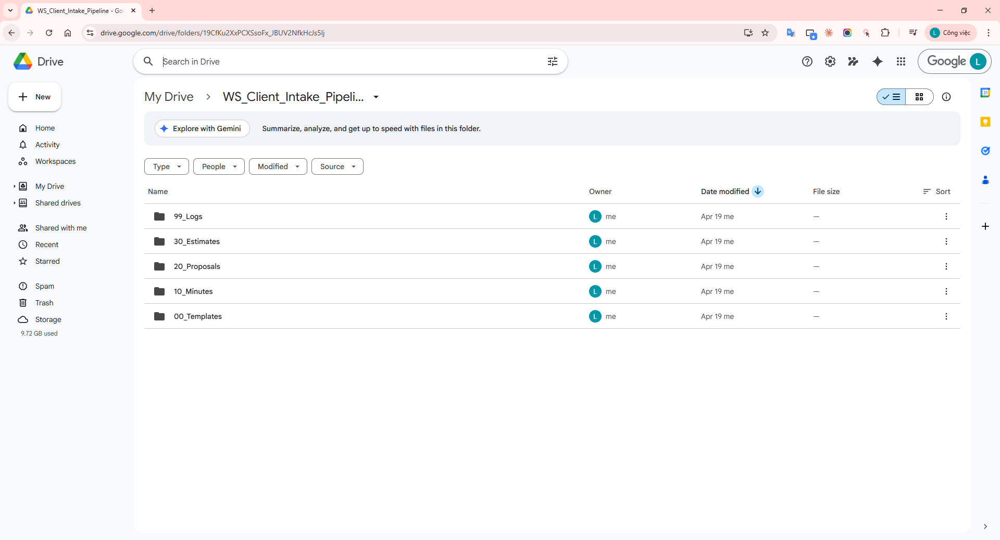
Hướng dẫn Step 2: Mở Doc template biên bản TEMPLATE_Minutes_IT_Intake trong 00_Templates, cuộn để thấy rõ phần metadata + các mục chính (Goal, Key questions, Raw notes).
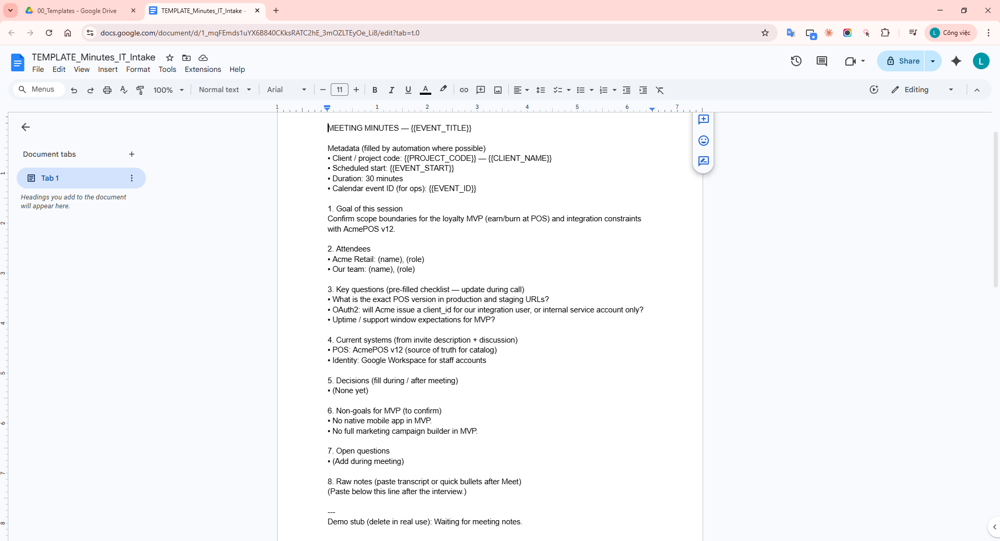
Hướng dẫn Step 3: Mở Doc template đề xuất TEMPLATE_Proposal_IT_Intake, hiển thị các phần Executive summary, Proposed scope, Estimate hint (hoặc các placeholder tương đương).
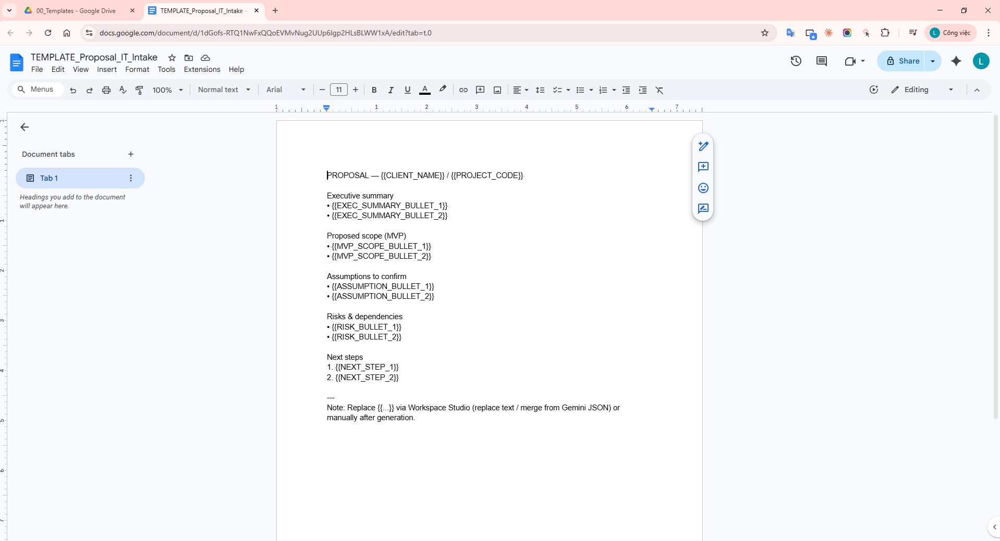
Hướng dẫn Step 4: Mở Google Sheet template trong 00_Templates, xác nhận có đủ header item_id,event_id,project_code,work_package,role,md_low,md_high,source; chưa cần data mẫu.
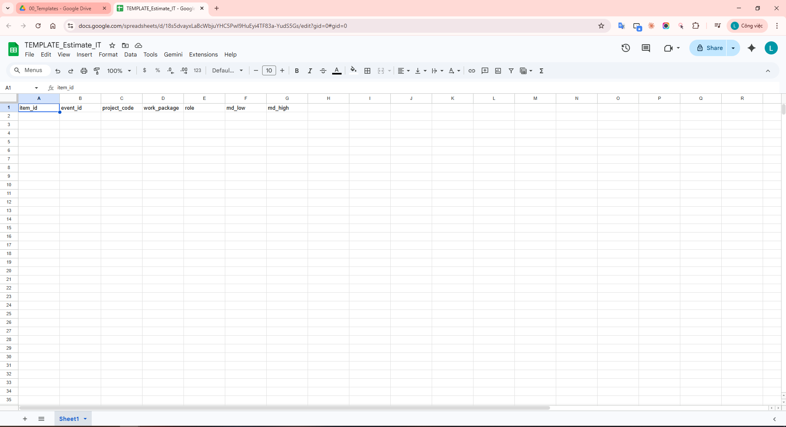
Hướng dẫn Step 5: Mở Google Chat, vào đúng space pipeline (ví dụ client-intake-bot-demo), hiển thị cả sidebar trái + tên space.
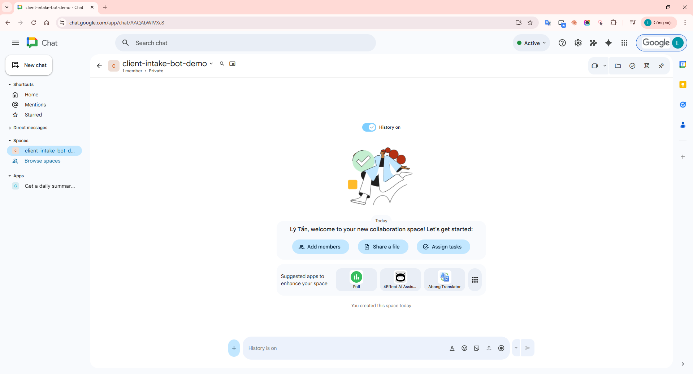
Hướng dẫn Step 6: Vào Workspace Studio và mở màn hình tạo flow mới.
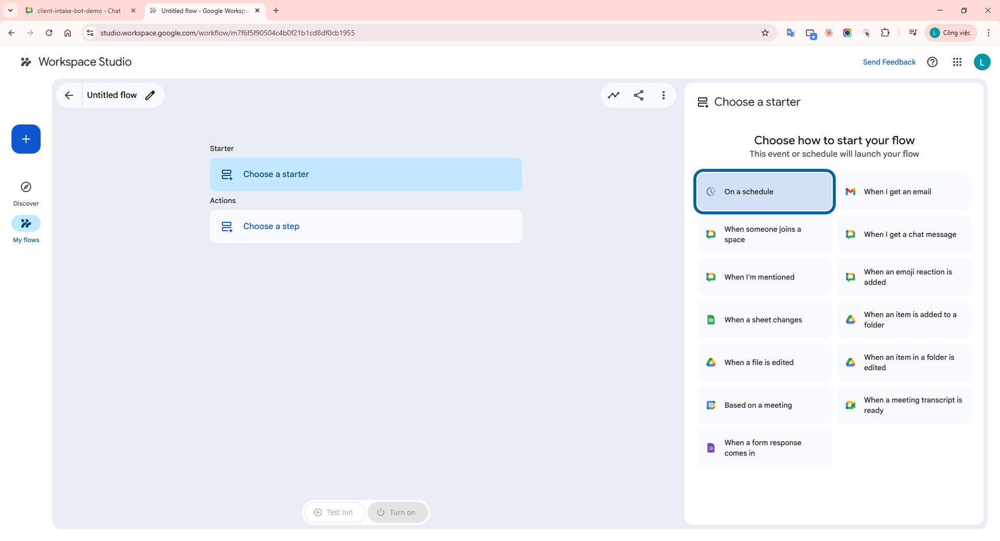
Hướng dẫn Step 7: Dựng Flow A với tối thiểu 2 step: Step 1: Based on a meeting và Step 2: Notify me in Chat.
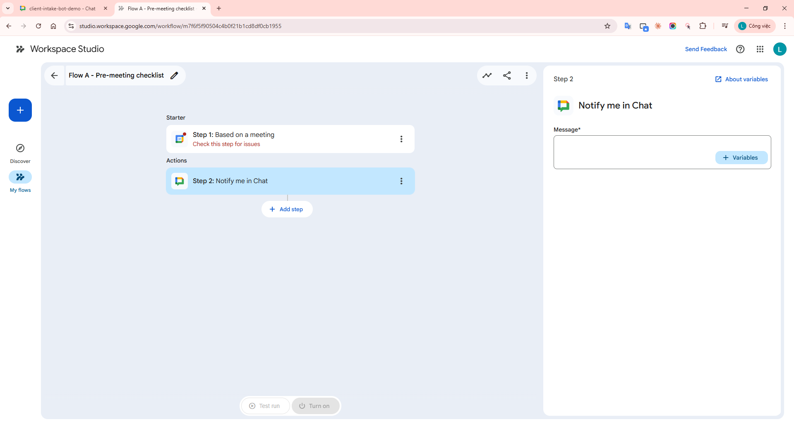
Hướng dẫn Step 8: Mở panel trigger của Based on a meeting, chọn meeting ở tương lai và cấu hình Before meeting + time offset phù hợp.
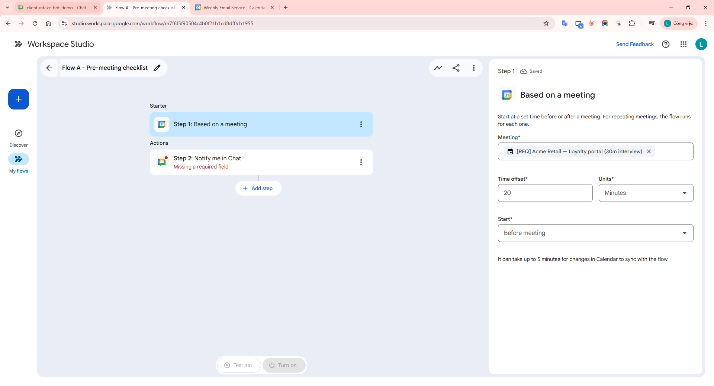
Hướng dẫn Step 9: Mở Step 2: Notify me in Chat, chọn đúng space và dán trực tiếp nội dung checklist dưới đây:
[Pre-meeting] Client requirements interview (30m) Meeting: Acme Retail — Loyalty portal Start time: (see Calendar event) Purpose: • Clarify loyalty MVP scope (earn/burn only vs campaigns). Key questions: 1) POS version + staging URL for AcmePOS v12? 2) OAuth2: client_id for integration user or internal service account? 3) Desired uptime / support window for MVP? Assumptions: • POS catalog is the source of truth. • No native mobile app in MVP.
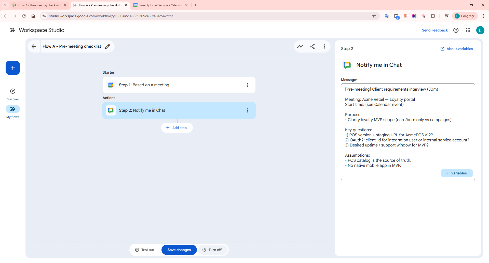
Hướng dẫn Step 10: Save/Turn on flow A, đợi đến mốc trigger để tin nhắn thực tế được post vào Chat space.
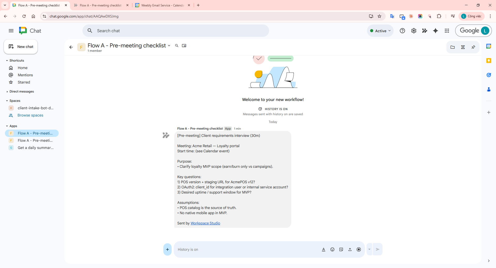
Hướng dẫn Step 11: Trong Flow B, ở Actions bấm Choose a step và chọn step Docs/Drive tương đương (Create a doc hoặc Add to a doc hoặc copy template). Đảm bảo canvas có đủ Step 1 + Step 2.
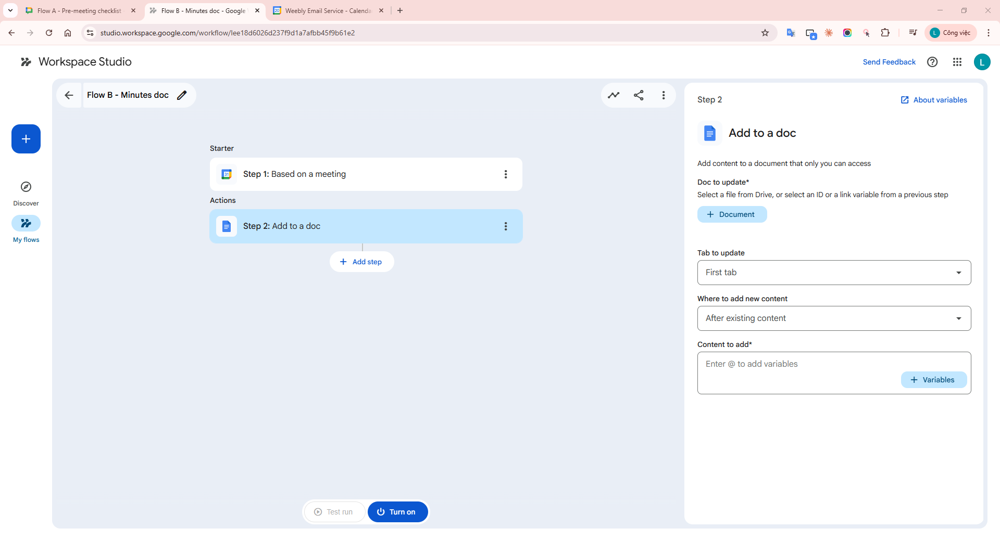
Hướng dẫn Step 12: Trong panel phải của Step 2: Add to a doc, chọn doc đích bằng + Document, để Where to add new content = After existing content, rồi dán nội dung tối thiểu:
Meeting notes (auto): - Meeting title: [Meeting title] - Start time: [Meeting start time] - Generated by Flow B.
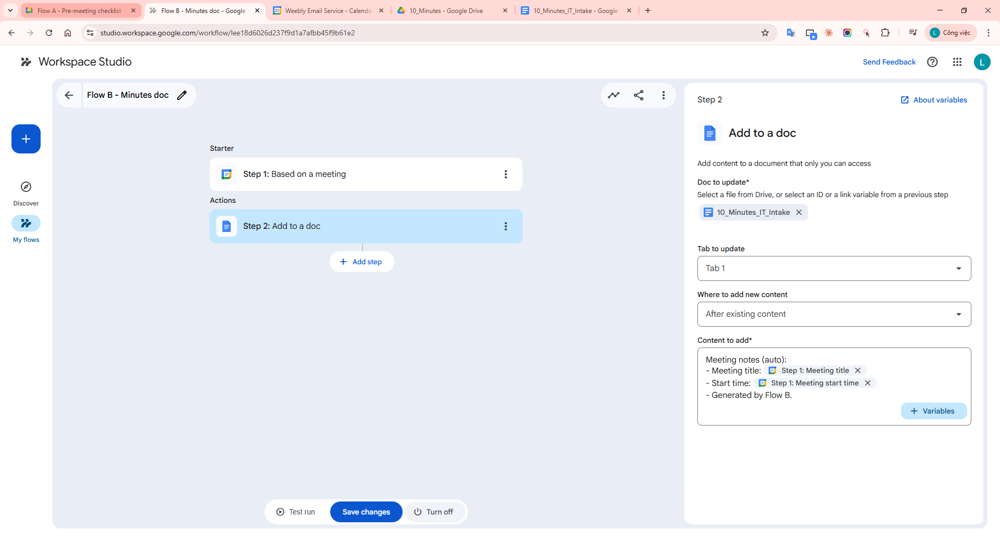
Hướng dẫn Step 13: Chạy test run hoặc trigger meeting thật, vào Drive mở folder 10_Minutes và kiểm tra file minutes đã được tạo/cập nhật.
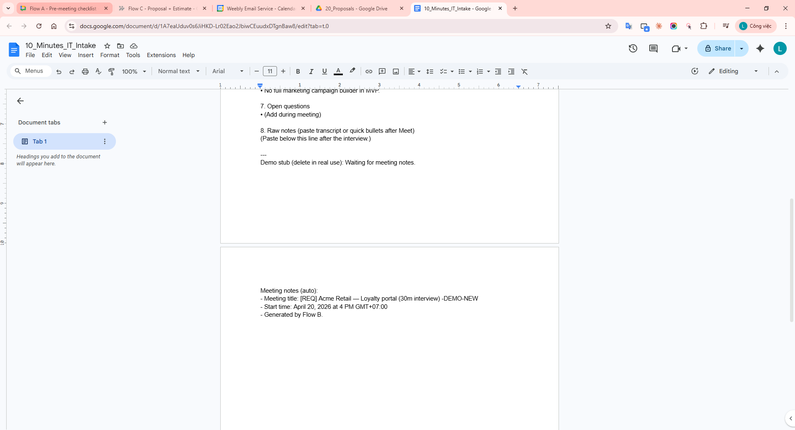
Hướng dẫn Step 14: Tạo Flow C - Proposal + Estimate, sau đó thêm lần lượt các step để canvas có đủ chuỗi: Starter (Based on a meeting) → Extract → Add to a doc/Create a doc → Add a row (Sheets) → Notify me in Chat. Đảm bảo đã có đủ 5 khối trong flow.
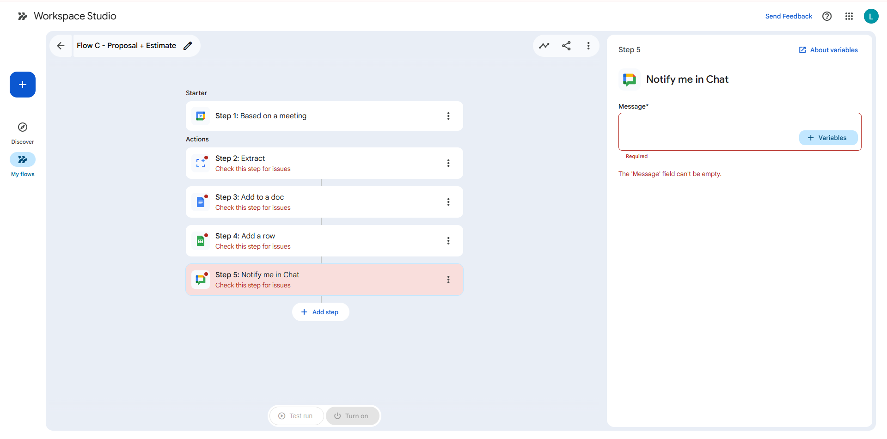
Hướng dẫn Step 15 (điền Extract):
Step 2: Extract để mở panel cấu hình bên phải.Content to analyze, bấm + Variables và chọn nguồn nội dung từ meeting/minutes (ví dụ title/description/notes).What to extract, dùng Custom content thay vì để trống predefined.executive_summary, work_package, role, md_low, md_high.
Mẫu mô tả cho từng trường (copy nhanh):
executive_summary: One concise summary sentence of the meeting outcome.work_package: The main implementation work item for estimate, phrased as a deliverable.role: Primary role responsible for the work package (Backend, PM, QA, etc.).md_low: Lower-bound effort estimate in man-days as a number.md_high: Upper-bound effort estimate in man-days as a number.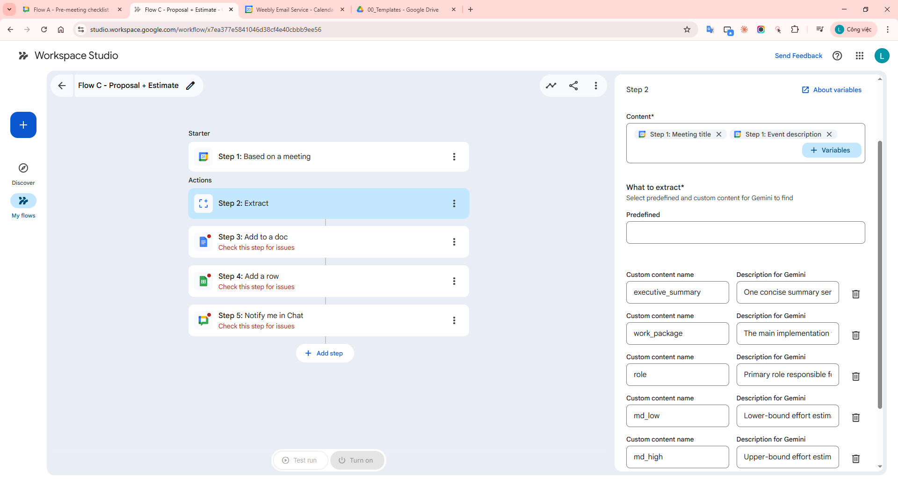
Hướng dẫn Step 16 (điền Proposal doc):
Step 3: Add to a doc trong Flow C.Doc to update, bấm + Document và chọn proposal doc/template (ví dụ TEMPLATE_Proposal_IT_Intake).Content to add bằng nội dung map từ Extract, rồi Save changes và chạy Test run.Block mẫu cho Content to add:
Executive summary: - [Step 2: executive_summary] Proposed scope: - [Step 2: work_package] Estimate hint: - Role: [Step 2: role] - MD range: [Step 2: md_low] - [Step 2: md_high]
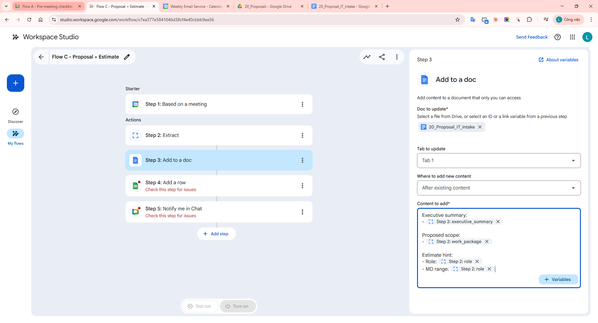
Hướng dẫn Step 17 (append dòng estimate vào Sheet):
Step 4: Add a row trong Flow C.TEMPLATE_Estimate_IT) và đúng tab chứa header.work_package → Step 2: work_package,
role → Step 2: role,
md_low → Step 2: md_low,
md_high → Step 2: md_high,
source → text cố định studio_flow_v1.
Save changes và chạy Test run.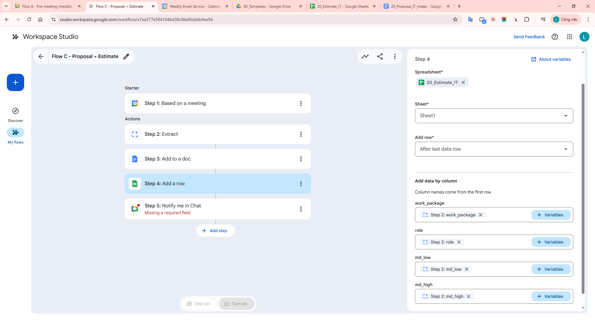
Hướng dẫn Step 18 (post-meeting chat notify): Click Step 5: Notify me in Chat, điền đầy đủ trường bắt buộc (space + message), sau đó Save changes và chạy flow. Dùng trực tiếp mẫu message dưới đây:
Post-meeting draft generated. - Proposal updated (Step 3) - Estimate row appended (Step 4) Please review proposal and estimate sheet.
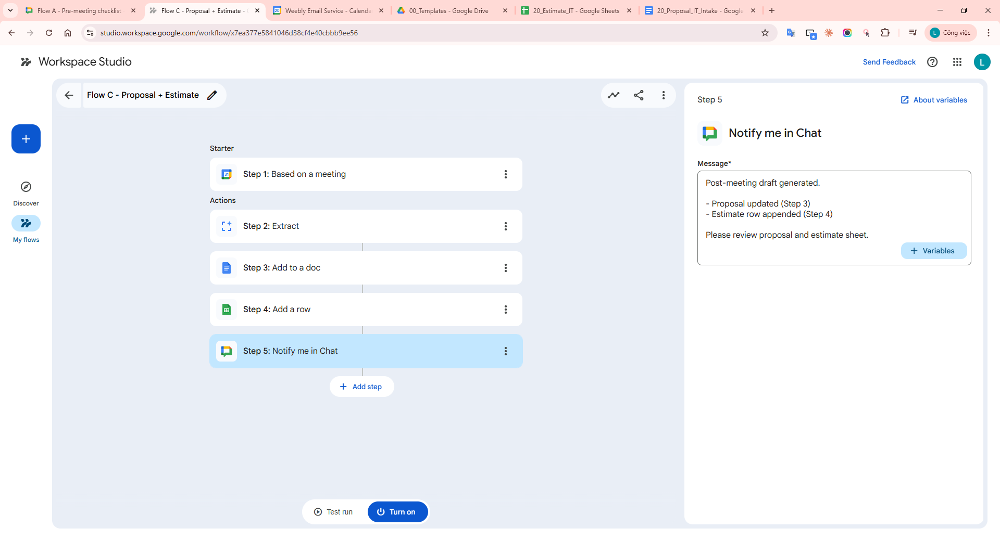
Hướng dẫn Step 19 (execution/run log): Trong Workspace Studio, mở panel lịch sử chạy của Flow C (run detail) và kiểm tra các step Extract, Add to a doc, Add a row, Notify me in Chat cùng trạng thái success/failed.
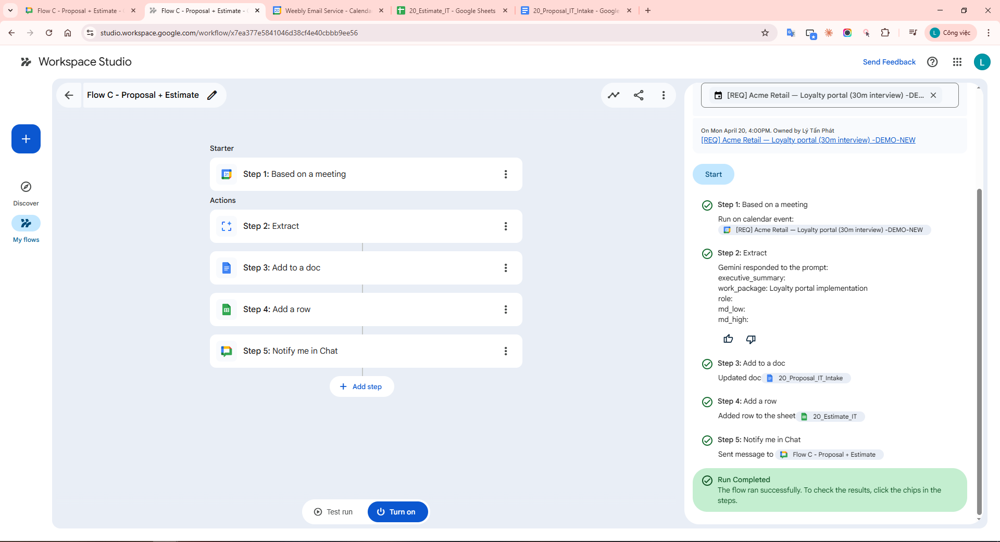
Hướng dẫn Step 20 (ảnh tổng hợp idempotency): thay vì chỉ chụp mỗi Sheet, hãy ghép 3 phần vào một ảnh gồm: (1) Sheet estimate/log, (2) Proposal Doc, (3) Chat notify. Mục tiêu là chứng minh khi run lại cùng event, hệ thống không tạo hiệu ứng nhân bản mất kiểm soát. Có thể ghép bằng Paint và thêm nhãn nhỏ Sheet, Doc, Chat.
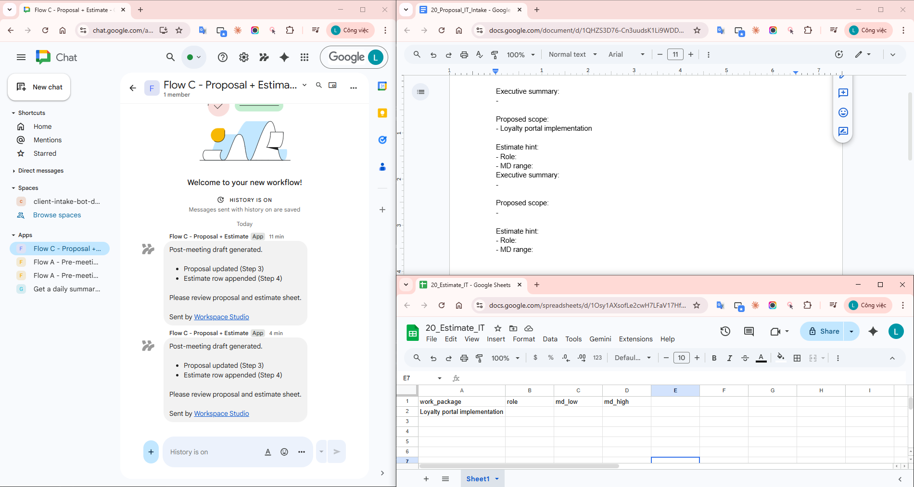
| Rủi ro | Cách tái hiện / quan sát | Mitigation |
|---|---|---|
| 1. Quyền Drive / Chat | Chạy flow bằng user không có quyền ghi folder đích hoặc bot/app chưa được add vào Chat Space → bước fail trong run history. | Folder gốc share với nhóm triển khai Studio; dùng Space “nội bộ” có quyền post cho automation; ghi rõ service account (nếu có) trong tài liệu nội bộ. |
| 2. Template ID / file bị di chuyển | Đổi tên hoặc move master template → bước “copy template” lỗi file not found. | Lưu templateFileId trong một Google Doc “config” versioned; flow đọc config trước khi copy; khóa quyền chỉnh sửa thư mục 00_Templates. |
| 3. Tiêu đề sự kiện không đồng nhất | Sự kiện thiếu [REQ] hoặc tiếng Việt không dấu / ký tự đặc biệt làm condition sai. |
Chuẩn hóa prefix + parse JSON trong description; fallback: bất kỳ sự kiện nào trên calendar “Sales intake”. |
| 4. Chạy trùng (idempotency) | Lưu Doc hai lần hoặc append Sheet trùng khi người dùng bấm “Run again” hoặc trigger kép (event end + file updated). | Trước khi tạo file mới: tra Flow_Execution_Log theo event_id + step. Đã có → skip hoặc update-in-place. Với Sheet: dùng item_id deterministic (hash event_id + work_package). |
Demo đã xác nhận pipeline chạy end-to-end: pre-meeting checklist lên Chat, minutes được cập nhật tự động, proposal được điền từ Extract, estimate được append vào Sheet, và có run history để đối soát. Với team presales/PM, mô hình này đủ dùng làm chuẩn vận hành đầu funnel trước khi chuyển sang estimate chi tiết hoặc SOW chính thức.
Đây là hướng triển khai có ROI tốt cho team đã dùng Google Workspace: chi phí chính nằm ở chuẩn hóa template và cấu hình flow ban đầu. Nên xem Studio là lớp tự động hóa hỗ trợ quyết định (khởi tạo tài liệu, đồng bộ dữ liệu, nhắc việc), còn phần chốt phạm vi/chi phí cuối cùng vẫn do PM và team delivery quyết định.